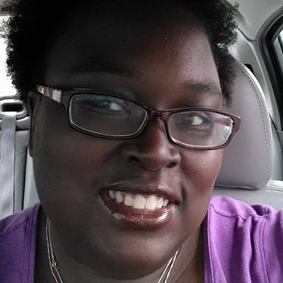

I'm Kellee, an aspiring web developer with a soon to be completed Computer Science degree from Columbus State Community College. A midwestern girl at heart, I currently reside in Columbus, OH.
What's important to you?
In Judaism, there's something called Tikkun Olam. It's Judaism envisioning an ideal world, and is often translated to mean "repair of the world", and even as social justice. The idea of repairing the world, of leaving things better than how we found them, is an important idea to me, and is one of the things that drew me to study Judaism.
What are your favorite hobbies?
I love to read, mostly science fiction/fantasy, biographies, cookbooks, and comics. I also play video games, mostly World of Warcraft, Sims 4, and the occasional shooter. I'm horrible at first person shoooters, but still keep trying to play Borderlands 2. I'm also a fan of Doctor Who, Firefly, Star Wars, and Star Trek. Picard will always be my favorite Captain.
What music have you been listening to lately?
Lately, I've been listening to the The Black Keys, who I was able to see when they kicked off their Turn Blue tour here in Columbus, OH. I'm also listening to Alabama Shakes, whom I only recently discovered.